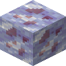

恒冰红石矿石
Eternal Ice Redstone Ore
英文名: Eternal Ice Redstone Ore命名空间 ID:
eternal_starlight:eternal_ice_redstone_ore类型: 方块所属模组: Eternal Starlight资料检索: 🔎 在 MC百科 搜索「恒冰红石矿石」所属标签
获取方式
世界生成 (1)
eternal_starlight:redstone_ore
用于合成 (2)

原始 JSON
{
"type": "minecraft:blasting",
"category": "blocks",
"cookingtime": 150,
"experience": 1.0,
"ingredient": {
"item": "eternal_starlight:eternal_ice_redstone_ore"
},
"result": {
"count": 1,
"id": "minecraft:redstone"
}
}熔炼（熔炉）Eternal Starlight
原始 JSON
{
"type": "minecraft:smelting",
"category": "blocks",
"cookingtime": 300,
"experience": 1.0,
"ingredient": {
"item": "eternal_starlight:eternal_ice_redstone_ore"
},
"result": {
"count": 1,
"id": "minecraft:redstone"
}
}